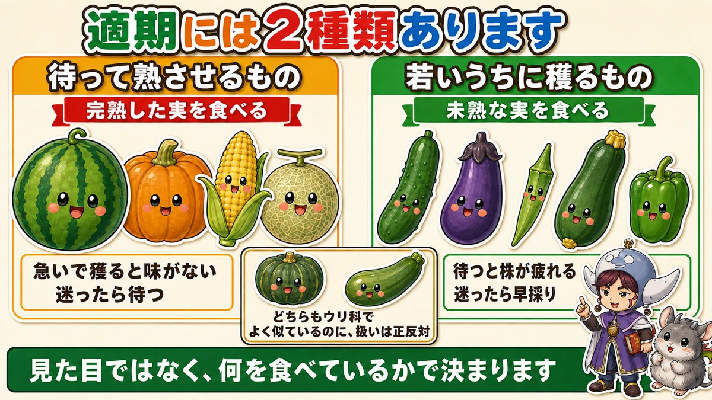
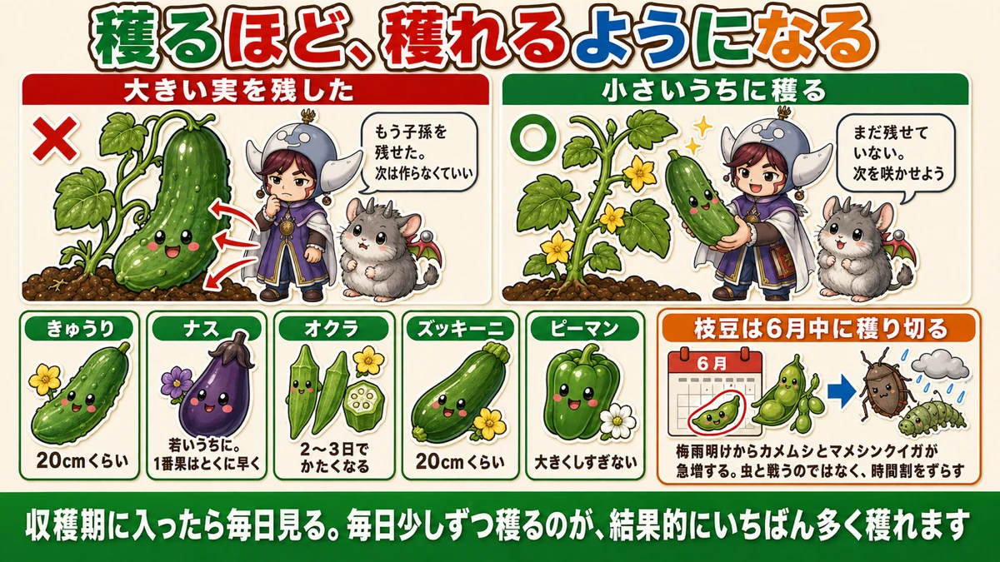
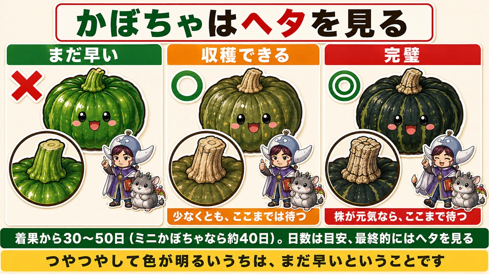
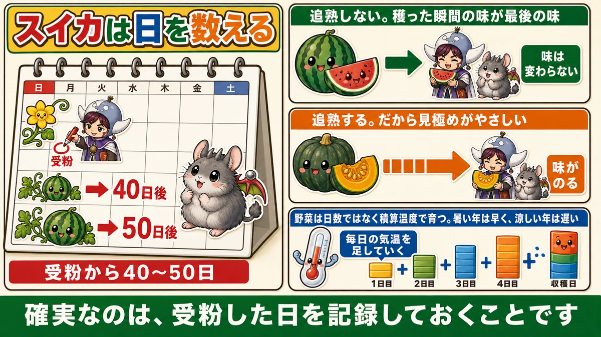

If in doubt, pick it early 🥒 With one group of crops — and the exact opposite for the other

🗨️ "I never know when to pick things."
🗨️ "I waited for it to get bigger and it went tough."
🗨️ "I picked it in a hurry and it tasted of nothing."
Hello, I'm Eiko. Eight years of growing vegetables organically and without pesticides, and a teaching licence in science.
Harvesting is the best job in the garden. It's also the job where the judgement goes wrong most often.
The point of this article, up front:
There are two kinds of "ready".
Mix them up and you fail at both ☺️
The two kinds of ready

What this diagram says （図解の文字）
- There are two kinds of ready
- Wait and let it ripen — you eat the ripe fruit ／ pick in a hurry and there's no flavour ／ if in doubt, wait
- Pick it young — you eat the unripe fruit ／ waiting tires the plant out ／ if in doubt, pick early
- Both are cucurbits and look alike — and the handling is exactly opposite
- It isn't decided by appearance, but by which part you eat
① Things you wait for
- Watermelon
- Squash and pumpkin
- Sweetcorn
- Melons
With these you are eating the fully ripe fruit.
Pick early and there's nothing there. A fruit taken before it has sweetened will never sweeten. So you read the signs and you wait.
② Things you pick young
- Cucumber
- Aubergine
- Okra
- Courgette
- Peppers
With these you are eating the unripe fruit.
A cucumber left alone will get much bigger. It will also be inedible — tough skin, obvious seeds, flavour gone. And there's a second cost, which is the real one: waiting tires the plant.
The dividing line is ripe vs unripe
That's the whole rule:
Eaten ripe → wait. Eaten unripe → pick early.
Squash and courgettes are both cucurbits and look like relatives, and the instructions are opposite — squash is eaten ripe, courgette unripe. It isn't decided by what the plant looks like, but by which stage you eat.
If in doubt — but which way?
Unripe-eaten crops: if in doubt, pick. Cucumber, aubergine, okra, courgette. You're doing the plant a favour, for reasons below.
Ripe-eaten crops: if in doubt, wait. Watermelon, squash, sweetcorn. Picking early can't be undone — and watermelon in particular never improves after cutting.
The two classic failures are simply these rules swapped:
- waiting for a cucumber to "get bigger" — now it's tough and the plant is tired
- cutting a watermelon because you want to eat it — now it tastes of water
Both done with good intentions. Only the rule was the wrong way round.
Why waiting tires the plant

What this diagram says （図解の文字）
- The more you pick, the more you get
- × A big fruit left on — "I've got offspring. No need to make more"
- ○ Picked young — "Not yet. Let's open another flower"
- Cucumber: about 20 cm ／ Aubergine: young, and the first fruit especially early ／ Okra: tough within 2–3 days ／ Courgette: about 20 cm ／ Peppers: don't let them get big
- Once picking starts, look every day. Picking a little every day gives you the biggest harvest in the end
The plant keeps feeding the fruit
For as long as a fruit is attached, the plant is sending resources into it — to swell it, and to finish the seeds inside.
Then it decides it's done
A plant's purpose is seed. When the seeds inside a large fruit are complete, the plant concludes:
"I've reproduced. I don't need to make more."
And it stops flowering. One fruit left on the plant costs you the next few dozen.
Which is why picking causes picking
Do the opposite — keep taking them small — and the plant concludes it hasn't reproduced yet, and opens more flowers.
Harvesting is a signal to the plant. That's the mechanism behind "the more you pick, the more you get".
Squash — look at the stalk, not the fruit
Now the waiting crops. For squash and pumpkin the reliable thing to look at is the stem that joins fruit to vine — the peduncle, the "stalk".

What this diagram says （図解の文字）
- For squash, look at the stalk
- × Too early ／ ○ Can be picked — at the very least, wait until here ／ ◎ Fully ripe — if the plant is still healthy, wait until here
- 30–50 days from fruit set (about 40 for a small squash). Days are a guide; in the end, look at the stalk
- While it's glossy and bright in colour, it's still too early
Three stages
Too early — the stalk is still green, and the fruit's skin is green and glossy.
Ready — the stalk has gone corky and dry, and split lengthways. You may pick from here.
Perfect — cracks across the stalk as well as along it. This is the best eating.
Where to draw the line
Always wait at least for the lengthways split.
Then: if the plant is still healthy, wait for the cross-cracks too. If the plant is going over and the leaves are dying back, pick at the lengthways split and don't push it — you're judging the plant as well as the fruit.
The fruit gives you a second opinion
- the gloss goes and the colour darkens
- the markings become distinct
Still shiny and bright means still early.
As a rough timing, 30–50 days from fruit set, and about 40 days for a small squash. Days shift with the weather, though — the stalk is the decider.
Watermelon — count the days

What this diagram says （図解の文字）
- With watermelon, count the days
- Pollination → 40 days → 50 days; 40–50 days from pollination
- Doesn't ripen after cutting. The taste at the moment you cut it is the final taste — flavour doesn't change
- Squash does ripen after picking, which makes the judgement easier — flavour develops
- Vegetables grow on accumulated temperature, not on days. Hot years are early, cool years late
- The reliable method is to write down the day it was pollinated
Watermelon does not ripen off the plant
This is the key difference. Squash improves in store — leave it a few weeks and the flavour develops. Watermelon doesn't. Whatever it tastes like when you cut it is what it tastes like, full stop.
Which makes it much harder to call than squash.
So record the date
You'll hear plenty of tests — the sound when you tap it, the tendril near the fruit drying off, the dimple at the base. They're all worth something and they all take practice.
What's reliable is writing down the day the flower was pollinated.
40–50 days from pollination. If you hand-pollinated, mark the calendar and count. I have never found anything that fails less often.
Why there's a ten-day spread
Because plants run on accumulated temperature, not on days. Add up each day's warmth, and the fruit ripens when the total reaches a certain figure.
Hot summers are early, cool ones late. So use it as: past day 40, start looking at the other signs too.
Edamame — the timing is the pest control
Edamame works on a different principle. Sow early, and you can be picking in early summer — and finishing then matters enormously.
The reason: as the humid heat of midsummer sets in, shield bugs and pod-boring moths increase sharply. Both damage the pods directly, sucking or eating the beans inside.
Finish picking before that window opens and you miss the whole problem.
One practical note: under insect netting, edamame eventually grows up into the mesh. When it does, cut the growing tip off with scissors. Nothing useful sets above that point, and a plant pressed against netting just gets damaged.
Sizes for the pick-early crops
- Cucumber — about 20 cm (8 in). They grow startlingly fast; look every day
- Aubergine — young, and the first fruit especially early
- Okra — goes tough quickly; miss two or three days and it's inedible
- Courgette — about 20 cm. Left alone they become marrows
- Peppers — don't let them get large; it tires the plant
What these all share is speed. What was perfect yesterday is too big today, and okra hardens in two or three days.
Once picking starts, a weekly look isn't enough — make it daily. Look every day and take a little each time. That gives you the biggest total harvest, by some margin.
To sum up
- ✅ Two kinds of ready: wait-to-ripen, and pick-young
- ✅ Wait: watermelon, squash, sweetcorn, melon (eaten ripe)
- ✅ Pick young: cucumber, aubergine, okra, courgette, peppers (eaten unripe)
- ✅ The line is ripe vs unripe, not what the plant looks like
- ✅ Squash and courgette look alike and are handled in opposite ways
- ✅ Unripe crops: if in doubt, pick. Ripe crops: if in doubt, wait
- ✅ While a fruit is attached, the plant keeps feeding it
- ✅ Once the seed is finished the plant stops flowering — one fruit costs dozens
- ✅ Take the first fruit tiny, or pinch it off
- ✅ Squash: green stalk → corky with a lengthways split → cross-cracks is perfect
- ✅ Wait for the lengthways split at minimum; for the cross-cracks if the plant is strong
- ✅ Squash ripens after picking. Watermelon does not
- ✅ Watermelon: record the pollination date; 40–50 days
- ✅ The spread exists because growth runs on accumulated temperature
- ✅ Edamame: finish before midsummer, when shield bugs and pod borers arrive
- ✅ Don't fight insects; shift the timetable
- ✅ Once harvest starts, look every day
You don't have to do all of it. Today, pick one cucumber at the point where you think "that's probably still a bit small". That's the right one 🥒
Thank you for reading!